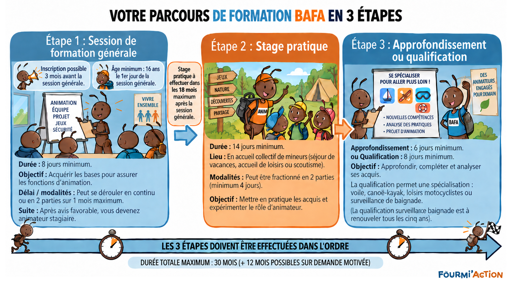
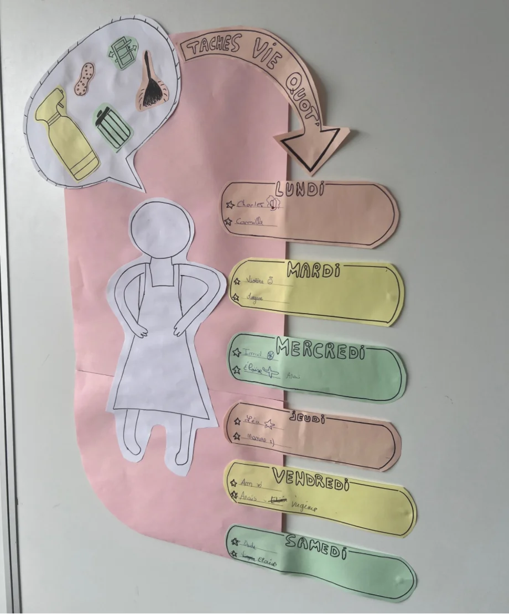

Formation générale
Découvrir les repères et les pratiques de l’animation.
Comprendre les étapes, comparer les formules et préparer votre projet avec notre équipe.
Le brevet d’aptitude aux fonctions d’animateur prépare à l’animation occasionnelle auprès des enfants et des jeunes en accueils collectifs de mineurs. Il s’inscrit dans une démarche d’engagement citoyen.
Découvrir les repères et les pratiques de l’animation.
Mettre en œuvre ses apprentissages sur le terrain.
Enrichir ses pratiques ou développer une compétence spécifique.
Consulter les conditions officielles du BAFA


Apprendre à animer, c’est expérimenter, observer ce qui se passe, en parler et essayer à nouveau. Notre projet associe des situations concrètes, des échanges et des temps de bilan.
Le calendrier des prochaines sessions sera publié ici. Contactez-nous pour préparer votre parcours.
Demander des informationsLes formules effectivement disponibles sont précisées sur chaque fiche de session.
Formation générale
Approfondir sa pratique
Développer une compétence spécifique
La formation de qualification peut être faite en plus de la formation d’approfondissement ou à la place de la formation d’approfondissement.
Vous avez besoin d’aide pour les démarches numériques, pour préparer la recherche d’un stage pratique ou pour évoquer un besoin d’aménagement ? Contactez-nous afin d’échanger sur votre situation.
Contacter l’équipeCes deux types de session constituent des possibilités pour la dernière étape du parcours BAFA. La qualification développe une compétence spécifique. Consultez les conditions et prérequis officiels avant de choisir.
Vous devez avoir 16 ans révolus au premier jour de la formation générale BAFA. Vous pouvez préparer votre inscription administrative sur le portail officiel BAFA-BAFD avant le début de la session.
Les prestations sont indiquées dans les trois formules ci-dessus. Vérifiez ensuite celles qui sont proposées sur votre fiche de session.
Vous pouvez solliciter la CAF et les collectivités locales : votre mairie, votre département ou votre région. Vous pouvez également interroger votre employeur sur une éventuelle prise en charge. Les conditions et les montants varient selon votre situation et les organismes : renseignez-vous avant votre inscription et vérifiez les pièces à fournir et les délais de demande.
Écrivez-nous pour demander un échange individuel. Vous n’avez pas besoin d’envoyer un diagnostic médical dans votre première demande.
Le projet prévoit un accompagnement à la recherche : préparation des candidatures, repères sur les structures et mise en relation. Un stage ou un emploi ne peut pas être garanti.
Les prochaines dates seront publiées dès confirmation de l’habilitation officielle permettant d’ouvrir les formations. Vous pouvez dès maintenant nous contacter pour faire part de votre intérêt ; cette démarche ne constitue pas une inscription confirmée.